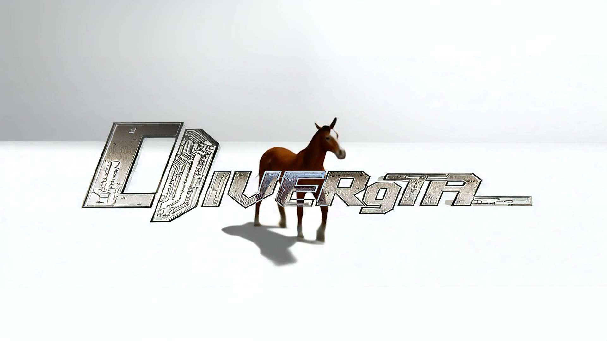
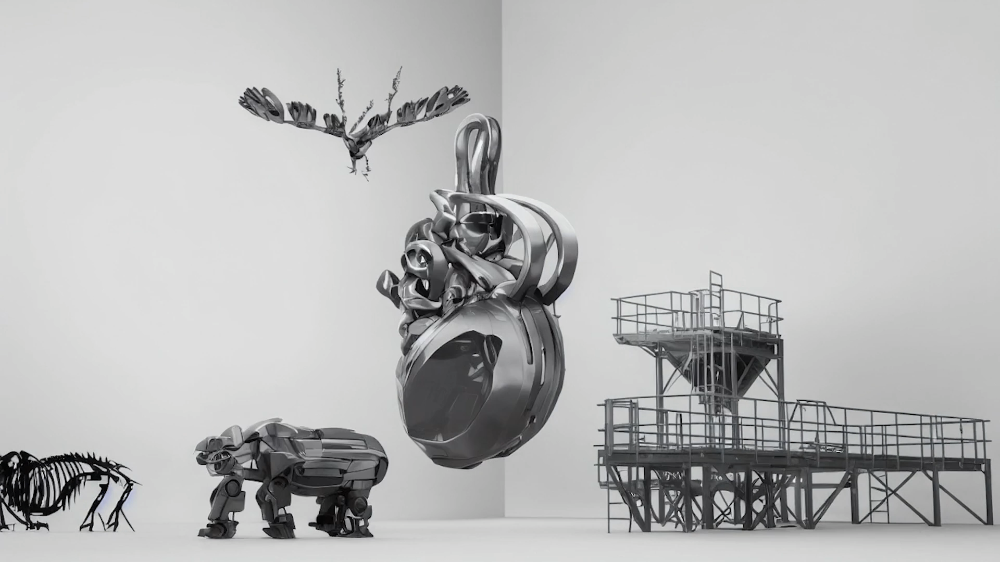
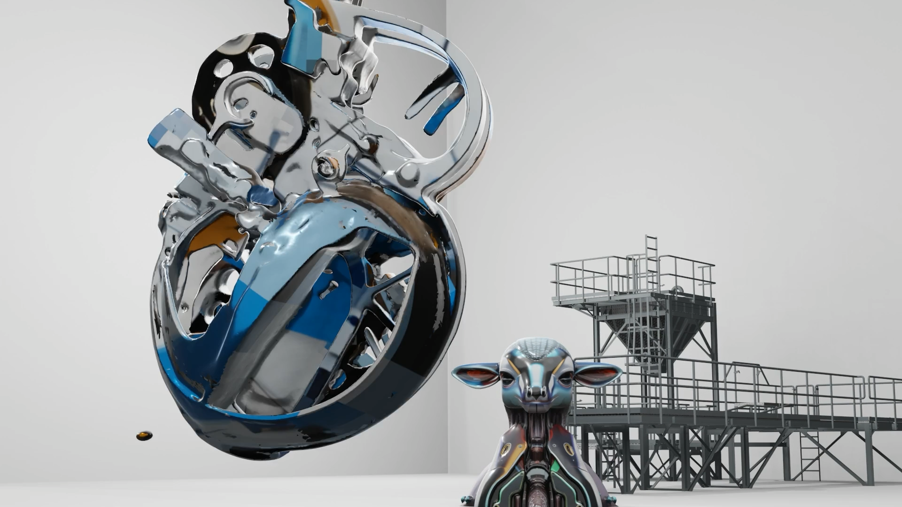
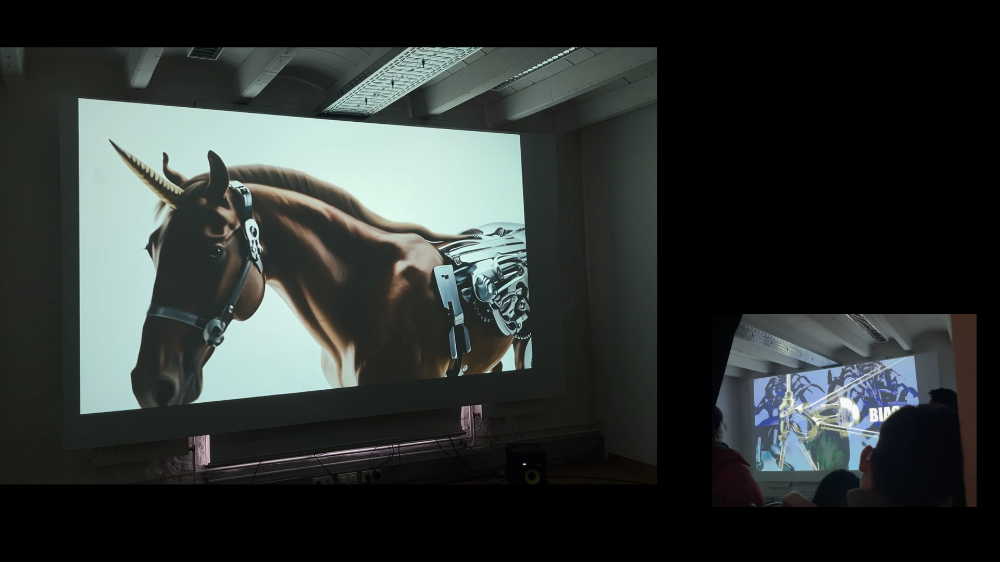

Divergital is a 3D and AI-generated video project exploring individuality within digital systems.
Concept / 3D Visual Development / AI Video Direction / Art Direction
3D Visuals / AI Video Generation / Large-scale Projection
Blender / Stable Diffusion / Video Editing


As technology advances, it can amplify biases and reinforce uniform ways of seeing the world. Divergital imagines a rigid digital landscape where a lone organic horse appears as a symbol of difference within a system built on uniformity.
Rather than losing its essence, the horse integrates with technology and evolves into a cybernetic unicorn — a new form that bridges the organic and the technological.
The project follows a transformation from difference to integration and divergence. The horse enters a digital system, merges with mechanical structures, and evolves into a cybernetic unicorn — a symbol of difference, transformation, and interconnected progress.

The project uses 3D modeling in Blender as a structural foundation, combined with Stable Diffusion to generate a distinct visual texture. It explores the relationship between precise 3D control and the latent possibilities of generative AI.
Divergital was presented as a large-scale video installation, extending the digital image into a spatial viewing experience.
